A Story in Many Little Chapters · 15 Church Street, Sag Harbor
Every previously italicized phrase is highlighted and colour-coded by source. Where the source page is on file, clicking the highlight opens the scan.
Gather 'round, time-travelers! Today we're visiting one very special corner in a sleepy seaside village — a corner where THREE different giant factories once stood. Let's go!
Once upon a time, the people of this village dreamed up something HUGE. So the mill was built at a cost of $130,000, an immense cost at that time, with work completed in 1850. That's a whole mountain of money!
And oh boy, was it big! The plant took up the entire block of Washington, Church, Sage, and Division Streets. It gobbled up the whole block like a hungry giant! It was an impressive structure, four stories high, 250 feet long, and 55 feet wide. And it was roomy inside too — Its 44,000 square feet was filled with machinery set up for the manufacture of all kinds of cotton goods.
To get inside, you climbed up fancy stairs — A double flight of solid stone steps led to the main entrance. And way up on top sat a tower with a great big bell! A twin tower, 8 feet high, topped the building, and a 1400-pound bell that hung in it struck the hour throughout the day and night. Ding-dong! All day AND all night long!
Down in the basement was the safest, strongest room of all. The basement, or picker room, had walls of granite and brick, 3 feet thick, with a ceiling of iron which created a fireproof area in which to store the cotton. And right next door, the machines got their power — The engine room which adjoined the picker room held four large boilers and a 230-horsepower engine to drive the machinery.
Now let's count all the busy machines! The working machinery consisted of 48 cards, 9000 spindles, and 200 looms of three different types, which produced from 36 to 50 yards of cotton material daily. And those spinners spun SO fast — The spindles, rotating 6000 times every minute, spun out 14,000 miles of yarn every day. Enough yarn to wrap around the whole wide world! And who ran all these machines? One hundred and seventy-five operators were employed at the cotton mill.
Just in case of trouble, the mill had its very own fire-fighting gadget! A rotary force pump, capable of throwing 1000 gallons of water per minute through a 300-foot hose, was installed to protect the cotton mill from the possibility of fire.
But not everybody loved the new mill! A clever writer named Prentice Mulford was a big grump about it. He thought sailors making cotton was a funny idea — the townspeople were about as fit to conduct the manufacture of cotton goods as would be an old salt to make Geneva watches. Can you imagine a sea captain building a teeny-tiny watch?! He gave a funny speech saying they used to be experts at fixing whaleships — We could strip an old craft from truck to keelson, put on new beams, new decks, new masts, re-sheath and copper, new yards, new sails. But he still admitted everyone loved their mill — How we worshipped that mill! How we watched the walls as gradually they rose from the ground. He imagined a town bursting with factories — We saw Sag Harbor full of cotton factories — factories up to the bridge and down to the wharf, and on Sleight's Hill and Sagg Road. And he grumbled that the bosses wanted EVERYBODY'S kids to work hard — SAVE OUR OWN — but never their own children! Cheeky!
The mill changed hands and names over the years. In 1857 Mr. C.C. Loomis, a New England manufacturer, came to Sag Harbor to take over the management of the mill. Sadly, cotton got cheaper and cheaper — In a two-year period the price of cotton fabric had dropped from 27 cents a yard to 10 cents a yard. The workers weren't happy about their pay, so one day they bravely stood up for themselves! In January 1861 employees of the mill, about 200 of them, struck for higher wages. And the good news? Work resumed the following day after terms were reached. Hooray — a happy ending to that squabble!
Then a new owner arrived. in December 1874 Stephen Clark purchased one-half interest in the mill. And they gave it a brand-new name! They re-named the place the Montauk Steam Cotton Mills. They even bought shiny new machines — within a short time production resumed with eight new spinning frames of the Sawyer patent and one Improved Kitson Picker. And they hired a new boss of the engines — Russell Champlain of Norwich, Connecticut was employed as chief engineer.
A couple of years before, there'd been another fiery adventure nearby! Two years earlier, the third of Sag Harbor's great fires broke out in a storehouse on Long Wharf, leaving in ruins the Nassau Hotel, the Maidstone Mills, boat shops, warehouses, stables, and the music hall.
But then came the mill's own big dramatic ending! On the night of October 25, 1879 a major blaze broke out, and the system devised to prevent such a calamity from happening had little effect in preventing the spread of the flames. Yikes! The place was quickly engulfed, and in no time the Cotton Mill became little more than a pile of ashes. But there was a tiny bit of good luck — Fortunately, the conflagration was contained.
After the fire, nothing went to waste! Clever folks scooped up every leftover bit. A few months later the old iron shafting of the burned-out building was purchased by John Athens of Meriden, Connecticut. Charles Watson Payne bought up any old brick worth saving, and the rest of the rubble was spread on the upper part of Madison Street for a base under the new marl surface. And a big heavy piece went on a grand journey! The shaft and hub of the driving wheel from the ruins was removed from the site by John Homan, taken to the Long Wharf, and placed on board a vessel.
But here's the happiest part — the fire taught everyone an important lesson! In any event, it did prove that manufacturing in Sag Harbor was not as impossible as some had thought, and within a year another factory would be built on the site.
After the fire, the townspeople rolled up their sleeves. The year was 1880 and the village was again trying to pick up the pieces after losing the Cotton Mill, its main means of employment. They had a plan! It was at this time the Business Aid Committee held a meeting to investigate the possibility of persuading Joseph Fahys to relocate his watchcase factory from Carlstadt, New Jersey to Sag Harbor.
But who WAS Joseph Fahys? Let me tell you his story! Joseph Fahys was born in Belfort, France, in 1832 and immigrated to the United States with his mother in 1848. He worked as an apprentice at a watchcase manufacturer in New Jersey and in 1857 bought that business from its former owner.
And here's the SILLIEST secret about why he came to town — itty-bitty bugs! The factory came to Sag Harbor oddly enough on account of mosquitoes. Mr. Fahys was having trouble with insects and mosquitoes at his New Jersey factory and was looking to relocate it to a better climate. Buzz off, pesky mosquitoes!
The news was SO exciting it made the big city papers! The New York Times reported that Sag Harbor had been selected as the site for a large silver watchcase factory which would give employment to about 400 persons. The plans were fancy — two main buildings 200 feet in length, three stories high, and connected by a 100-foot structure. They even planned a super-strong safe room! A vault, 10 by 13 feet and made of 1 '4-feet-thick granite blocks, would be installed in the main building.
First, they needed land! Eleazer Latham, real estate agent, sold to Joseph Fahys the very desirable piece of land on the corner of Division and Sage Streets, formerly the residence of Abraham H. Gardiner.
Then the builders got busy! In March 1881 the first load of brick arrived in the village from the Fisher's Island Brick Works, and soon construction began. With the foundation completed in April, the cornerstone laying took place the 21st of that month. A very important helper placed that special stone — Stephen Clarke, a representative of Mr. Fahys, installed the stone.
Then came a super-heavy delivery that must have made everyone's eyes pop! In June 1881 the heavy stone vault, weighing 6 to 7 tons, arrived at the Long Wharf and after an arduous three-day journey, reached the factory yard. Six whole tons — heavier than an elephant! And someone had a very tricky job way up high — Robert Brockleheart installed a 2100-pound iron cap on the chimney, having hoisted it to the top in four sections.
Finally, the machines arrived! Machinery arrived in November and, after being set in place, was tested in preparation for the factory's opening day. And guess what they did with leftover bricks from the old mill? Many of the bricks from the demolished structure were used to build the foundations of homes under construction on Division Street. Recycling, old-timey style!
Then, the big day! With the arrival of the new year 1882, came the first workers, men whom Fahys had brought from his Carlstadt factory. The melting of silver began and Fahys Watch Case Factory was in business. Hooray! And it grew SO fast! By the end of the year, the work force had increased to 350 employees, with a weekly payroll of $3100.
Workers came from faraway places to help! Skilled immigrants from Germany, Italy, and Poland were brought to Sag Harbor to work. The factory floors were lively and full — its manufacturing floors were filled with retired seamen and immigrants.
And oh, what a lovely place to work it was! The factory was one of the best places to work, with a recreation room, good benefits and clean workspaces. There were games to play — The hall contained a billiards room and card tables. And books to read! Fahys also had its own library. They were so kind with their books that the Fahys factory decided to donate their book collection to the new library. A worker named Raymond even had a fun job — One of Raymond's jobs was to place a list of the most popular books in with the employees' paychecks each week.
Every single day, something sparkly happened! In 1890, it was reported that the plant output required that $6,000 worth of gold be melted down each day. Golden gold, every single day! They were SO careful that even the floor sweepings were treasure — the floor scraps were valued at approximately $80,000 per year.
Picture all those busy workers at lunchtime! Every day at noon they streamed out of the huge brick building, running home for lunch. When the whistle blew, they zoomed! Later on, at the sound of the 12 o'clock whistle, they swarmed the luncheonettes nearby. There were so many people that the town needed a special light for the cars! The traffic was so dense that a traffic light was installed at Main and Washington Streets.
The factory helped the whole town feel happy and strong again! He was instrumental in bringing the village out of the economic slump that had begun with the decline of whaling in the 1850s.
The factory had a dazzling sister company that made beautiful treasures! After eight busy years, the company expanded its facilities by purchasing a piece of property on the east side of Main Street in the business district, constructing a magnificent three-story brick building. Famous architects designed it! Architects Carrere and Hastings of Bowling Green, New York City designed what was to be a masterpiece of architectural beauty. It took a LOT of bricks — It was 80 by 50 feet and contained more than 300,000 bricks.
This building was so grand it had lots of neighbors inside! The Post Office occupied the south side of the building on the first floor, and the new Peconic Bank, the second. There was even yummy ice cream! Offices on the second floor were occupied by the Sag Harbor Water Company, Meyerson's Ice Cream Parlor, and the law offices of Vermilye and Fanning. And way up top, a place for fun — The third floor held an amusement hall and rooms for the janitor to live in.
The silver company made the most magical shiny things! Undoubtedly, the most novel and artistic work turned out by the company was known as electro-deposit goods. They made teapots and cups! They made silver teapots, loving cups, mirrors, and worked a six-and-a-half-day week. They made treasures for a brand-new ship — including two candelabra, 22 inches high by 18 inches across and holding seven candles. They even made a sparkly thing for bicycles! Another unique item manufactured by the Alvin Company in 1896 was a silver mounting for bicycles which sold for $400. A fancy bike indeed!
So many new workers arrived that the town had to find them homes! Fifty houses with a monthly rent of $10 to $16 were needed.
The factory kept growing and growing! in February 1911 a four-story wing was added to the part that extended out to Church Street. And in wintertime, they had a clever trick to keep things from freezing — To keep the newly poured concrete from freezing, peat fires were built on the site. Toasty!
But just like the cotton mill, the sparkly silver building had a fiery ending. on New Year's morning January 1, 1925, a disastrous blaze put a sudden end to the silver company. What a way to start the new year! The interior of the spectacular Alvin building was completely gutted by the fire.
Sadly, hard times came, and the watchcase factory had to close its doors. In 1931, faced with some financial stress and increased competition, Fahys sold the plant to Mr. Arde Bulova. When it closed, many families had to say goodbye — Many skilled workers leave Sag Harbor in search of jobs. The town needed a new hero!
So who came to the rescue? What Sag Harbor needed was another watchcase factory, and in June 1937 village officials devised a plan to have a branch of the Bulova Watch Company locate here. The townspeople worked together to fix up the old building! A Citizens Committee, appointed by Mayor Kiernan and headed by A.T. Brown, was formed. They raised money together — The committee conducted a subscription campaign to which private individuals and local businesses would pledge money to pay for the renovation. And then — success! After production had reached about 30,000 cases per week, jobs became available for 200 men and women. Hooray!
Bulova was full of clever tricks! Did you know they made the very first radio commercial EVER? The nation's first radio commercial in 1926 read, "At the tone, it's 8 PM. B-U-L-O-V-A, Bulova watch time." And they made a super-smart bet on an airplane hero — Believing in Charles Lindberg's solo transatlantic flight, Bulova produced five thousand Lone Eagle watches with Lindberg's picture in them before Lindberg was even proven successful. That brave guess really paid off! the watches became available the day after Lindberg's return and were a phenomenal success.
When the whole world was at war, the factory helped too! During World War II, much of the production at the factory shifted over to timing devices for military munitions.
Lots and lots of townspeople remember working there! One worker remembered it fondly — It was fun. I was in the production scheduling department. We had this big table and huge books that charted the next step in the process. A lady named Barbara had the sparkliest job of all — They would bring the precious stones in gelatin capsules. We set tiny diamonds in the prongs and folded the prongs down. Twinkle, twinkle! They were so careful with the treasure that The floors were swept every night. Not one speck of gold was wasted! One worker named Craig even got a souvenir from his job — See this bump on my thumb? That's from working at Bulova. A thumb-bump to remember his factory days!
The buildings were so big and tall that Bulova's huge buildings towered over the village houses and its large windows offered good views of thei r back yards. On the factory floor in the 1950s, men and women were at work producing gold-plated cases and pressed and stamped stainless steel bases. And here's a fun legend — According to local lore, employees found gold dust from the Fahys era. Buried treasure, right under their feet! Best of all, Many villagers recall working a stint at Bulova and the company parties. Party time!
But all good things must change, and one day Bulova said goodbye. The factory produced its last watchcase in 1975, and the building was left to decay over time. Then everything inside was sold off — The contents were auctioned in 1980. The big building became a quiet, sleepy giant for a long, long time.
Years later, brave explorers tiptoed inside! They found a surprising old gadget — During our wandering, we came across a fire signal system, which to our surprise was embossed with the date 1872. And nature had moved right in! On the second floor, a tree was growing halfway into the building, merging into the brick wall in a strange sort of harmony. A tree growing INSIDE a building — nature wanted to join the fun!
The sleeping giant had one more chapter to go — and it's a happy one! People decided to turn it into fancy homes! But first, it needed a big, careful cleanup — the residue from wastewater containing heavy metals from cleaning solvents left in the drainage system required removal.
Then came a team of building experts! Beyer Blinder Belle (BBB), a New York City architectural firm that specializes in restoration and adaptive reuse of historic urban buildings, led the design team. They added wonderful new things for everyone to enjoy — The project included an underground parking structure with a landscaped courtyard above it and a swimming pool and fitness center for residents.
When it was all finished, there were lots of brand-new homes! In the end, 64 condominium units were created and several freestanding townhouses built on the 2.25-acre site between Division and Church Streets.
And the once-lonely building was transformed into something beautiful! What the architects had characterized in 2006 as a "deteriorating, threatening, hulk of a building... and an eyesore" experienced a remarkable transformation in their hands, and preserved Sag Harbor's largest historic building through restoration and adaptive reuse.
And so, the busiest corner in all of Sag Harbor — home to cotton, watchcases, sparkling silver, and now cozy homes — got to live happily ever after!
THE END
Every highlighted quote, in order of appearance, correlated to its underlying source. The swatch matches the highlight colour in the text.
| # | Verbatim Quote (abbreviated) | Source (Author, Title, Year, Page) |
|---|---|---|
| 1 | “So the mill was built at a cost of $130,000, an immense cost at that time, with work completed in 1850.” | Zaykowski, Sag Harbor: The Story of an American Beauty, 1991, p. 236 [page scan] |
| 2 | “The plant took up the entire block of Washington, Church, Sage, and Division Streets.” | Zaykowski, Sag Harbor: The Story of an American Beauty, 1991, p. 236 [page scan] |
| 3 | “It was an impressive structure, four stories high, 250 feet long, and 55 feet wide.” | Zaykowski, Sag Harbor: The Story of an American Beauty, 1991, p. 236 [page scan] |
| 4 | “Its 44,000 square feet was filled with machinery set up for the manufacture of all kinds of cotton goods.” | Zaykowski, Sag Harbor: The Story of an American Beauty, 1991, p. 236 [page scan] |
| 5 | “A double flight of solid stone steps led to the main entrance.” | Zaykowski, Sag Harbor: The Story of an American Beauty, 1991, p. 236 [page scan] |
| 6 | “A twin tower, 8 feet high, topped the building, and a 1400-pound bell that hung in it struck the hour throughout the day and night.” | Zaykowski, Sag Harbor: The Story of an American Beauty, 1991, p. 236 [page scan] |
| 7 | “The basement, or picker room, had walls of granite and brick, 3 feet thick, with a ceiling of iron which created a fireproof area in which to store the cotton.” | Zaykowski, Sag Harbor: The Story of an American Beauty, 1991, p. 236 [page scan] |
| 8 | “The engine room which adjoined the picker room held four large boilers and a 230-horsepower engine to drive the machinery.” | Zaykowski, Sag Harbor: The Story of an American Beauty, 1991, p. 236 [page scan] |
| # | Verbatim Quote (abbreviated) | Source (Author, Title, Year, Page) |
|---|---|---|
| 9 | “The working machinery consisted of 48 cards, 9000 spindles, and 200 looms of three different types, which produced from 36 to 50 yards of cotton material dai…” | Zaykowski, Sag Harbor: The Story of an American Beauty, 1991, p. 236 [page scan] |
| 10 | “The spindles, rotating 6000 times every minute, spun out 14,000 miles of yarn every day.” | Zaykowski, Sag Harbor: The Story of an American Beauty, 1991, p. 236 [page scan] |
| 11 | “One hundred and seventy-five operators were employed at the cotton mill.” | Zaykowski, Sag Harbor: The Story of an American Beauty, 1991, p. 236 [page scan] |
| 12 | “A rotary force pump, capable of throwing 1000 gallons of water per minute through a 300-foot hose, was installed to protect the cotton mill from the possibil…” | Zaykowski, Sag Harbor: The Story of an American Beauty, 1991, p. 236 [page scan] |
| 13 | “were about as fit to conduct the manufacture of cotton goods as would be an old salt to make Geneva watches” | Zaykowski, Sag Harbor: The Story of an American Beauty, 1991, p. 236 [page scan] |
| 14 | “We could strip an old craft from truck to keelson, put on new beams, new decks, new masts, re-sheath and copper, new yards, new sails.” | Zaykowski, Sag Harbor: The Story of an American Beauty, 1991, p. 236 [page scan] |
| 15 | “How we worshipped that mill! How we watched the walls as gradually they rose from the ground.” | Zaykowski, Sag Harbor: The Story of an American Beauty, 1991, p. 236 [page scan] |
| 16 | “We saw Sag Harbor full of cotton factories — factories up to the bridge and down to the wharf, and on Sleight's Hill and Sagg Road.” | Zaykowski, Sag Harbor: The Story of an American Beauty, 1991, p. 236 [page scan] |
| 17 | “SAVE OUR OWN” | Zaykowski, Sag Harbor: The Story of an American Beauty, 1991, p. 236 [page scan] |
| # | Verbatim Quote (abbreviated) | Source (Author, Title, Year, Page) |
|---|---|---|
| 18 | “In 1857 Mr. C.C. Loomis, a New England manufacturer, came to Sag Harbor to take over the management of the mill.” | Zaykowski, Sag Harbor: The Story of an American Beauty, 1991, p. 236 [page scan] |
| 19 | “In a two-year period the price of cotton fabric had dropped from 27 cents a yard to 10 cents a yard.” | Zaykowski, Sag Harbor: The Story of an American Beauty, 1991, p. 236 [page scan] |
| 20 | “In January 1861 employees of the mill, about 200 of them, struck for higher wages.” | Zaykowski, Sag Harbor: The Story of an American Beauty, 1991, p. 236 [page scan] |
| 21 | “Work resumed the following day after terms were reached.” | Zaykowski, Sag Harbor: The Story of an American Beauty, 1991, p. 236 [page scan] |
| 22 | “in December 1874 Stephen Clark purchased one-half interest in the mill.” | Zaykowski, Sag Harbor: The Story of an American Beauty, 1991, p. 236 [page scan] |
| 23 | “They re-named the place the Montauk Steam Cotton Mills.” | Zaykowski, Sag Harbor: The Story of an American Beauty, 1991, p. 236 [page scan] |
| 24 | “within a short time production resumed with eight new spinning frames of the Sawyer patent and one Improved Kitson Picker.” | Zaykowski, Sag Harbor: The Story of an American Beauty, 1991, p. 236 [page scan] |
| 25 | “Russell Champlain of Norwich, Connecticut was employed as chief engineer.” | Zaykowski, Sag Harbor: The Story of an American Beauty, 1991, p. 236 [page scan] |
| 26 | “Two years earlier, the third of Sag Harbor's great fires broke out in a storehouse on Long Wharf, leaving in ruins the Nassau Hotel, the Maidstone Mills, boa…” | Roth, Images of America Sag Harbor, 2018, p. 97 [page scan] |
| # | Verbatim Quote (abbreviated) | Source (Author, Title, Year, Page) |
|---|---|---|
| 27 | “On the night of October 25, 1879 a major blaze broke out, and the system devised to prevent such a calamity from happening had little effect in preventing th…” | Zaykowski, Sag Harbor: The Story of an American Beauty, 1991, p. 236 [page scan] |
| 28 | “The place was quickly engulfed, and in no time the Cotton Mill became little more than a pile of ashes.” | Zaykowski, Sag Harbor: The Story of an American Beauty, 1991, p. 236 [page scan] |
| 29 | “Fortunately, the conflagration was contained.” | Roth, Images of America Sag Harbor, 2018, p. 97 [page scan] |
| 30 | “A few months later the old iron shafting of the burned-out building was purchased by John Athens of Meriden, Connecticut.” | Zaykowski, Sag Harbor: The Story of an American Beauty, 1991, p. 236 [page scan] |
| 31 | “Charles Watson Payne bought up any old brick worth saving, and the rest of the rubble was spread on the upper part of Madison Street for a base under the new…” | Zaykowski, Sag Harbor: The Story of an American Beauty, 1991, p. 236 [page scan] |
| 32 | “The shaft and hub of the driving wheel from the ruins was removed from the site by John Homan, taken to the Long Wharf, and placed on board a vessel.” | Zaykowski, Sag Harbor: The Story of an American Beauty, 1991, p. 236 [page scan] |
| 33 | “In any event, it did prove that manufacturing in Sag Harbor was not as impossible as some had thought, and within a year another factory would be built on th…” | Zaykowski, Sag Harbor: The Story of an American Beauty, 1991, p. 236 [page scan] |
| # | Verbatim Quote (abbreviated) | Source (Author, Title, Year, Page) |
|---|---|---|
| 34 | “The year was 1880 and the village was again trying to pick up the pieces after losing the Cotton Mill, its main means of employment.” | Zaykowski, Sag Harbor: The Story of an American Beauty, 1991, p. 250 [page scan] |
| 35 | “It was at this time the Business Aid Committee held a meeting to investigate the possibility of persuading Joseph Fahys to relocate his watchcase factory fro…” | Zaykowski, Sag Harbor: The Story of an American Beauty, 1991, p. 250 [page scan] |
| 36 | “Joseph Fahys was born in Belfort, France, in 1832 and immigrated to the United States with his mother in 1848.” | Brady, Landmarks & Historic Sites of Long Island, 2012, p. 127 [page scan] |
| 37 | “He worked as an apprentice at a watchcase manufacturer in New Jersey and in 1857 bought that business from its former owner.” | Brady, Landmarks & Historic Sites of Long Island, 2012, p. 127 [page scan] |
| 38 | “The factory came to Sag Harbor oddly enough on account of mosquitoes.” | Leita, Long Island Oddities, 2013, p. 30 [page scan] |
| 39 | “was having trouble with insects and mosquitoes at his New Jersey factory and was looking to relocate it to a better climate.” | Leita, Long Island Oddities, 2013, p. 30 [page scan] |
| 40 | “The New York Times reported that Sag Harbor had been selected as the site for a large silver watchcase factory which would give employment to about 400 perso…” | Zaykowski, Sag Harbor: The Story of an American Beauty, 1991, p. 250 [page scan] |
| 41 | “two main buildings 200 feet in length, three stories high, and connected by a 100-foot structure.” | Zaykowski, Sag Harbor: The Story of an American Beauty, 1991, p. 250 [page scan] |
| 42 | “A vault, 10 by 13 feet and made of 1 '4-feet-thick granite blocks, would be installed in the main building.” | Zaykowski, Sag Harbor: The Story of an American Beauty, 1991, p. 250 [page scan] |
| # | Verbatim Quote (abbreviated) | Source (Author, Title, Year, Page) |
|---|---|---|
| 43 | “Eleazer Latham, real estate agent, sold to Joseph Fahys the very desirable piece of land on the corner of Division and Sage Streets, formerly the residence o…” | Zaykowski, Sag Harbor: The Story of an American Beauty, 1991, p. 250 [page scan] |
| 44 | “In March 1881 the first load of brick arrived in the village from the Fisher's Island Brick Works, and soon construction began.” | Zaykowski, Sag Harbor: The Story of an American Beauty, 1991, p. 250 [page scan] |
| 45 | “With the foundation completed in April, the cornerstone laying took place the 21st of that month.” | Zaykowski, Sag Harbor: The Story of an American Beauty, 1991, p. 250 [page scan] |
| 46 | “Stephen Clarke, a representative of Mr. Fahys, installed the stone.” | Zaykowski, Sag Harbor: The Story of an American Beauty, 1991, p. 250 [page scan] |
| 47 | “In June 1881 the heavy stone vault, weighing 6 to 7 tons, arrived at the Long Wharf and after an arduous three-day journey, reached the factory yard.” | Zaykowski, Sag Harbor: The Story of an American Beauty, 1991, p. 250 [page scan] |
| 48 | “Robert Brockleheart installed a 2100-pound iron cap on the chimney, having hoisted it to the top in four sections.” | Zaykowski, Sag Harbor: The Story of an American Beauty, 1991, p. 250 [page scan] |
| 49 | “Machinery arrived in November and, after being set in place, was tested in preparation for the factory's opening day.” | Zaykowski, Sag Harbor: The Story of an American Beauty, 1991, p. 250 [page scan] |
| 50 | “Many of the bricks from the demolished structure were used to build the foundations of homes under construction on Division Street.” | Zaykowski, Sag Harbor: The Story of an American Beauty, 1991, p. 250 [page scan] |
| # | Verbatim Quote (abbreviated) | Source (Author, Title, Year, Page) |
|---|---|---|
| 51 | “With the arrival of the new year 1882, came the first workers, men whom Fahys had brought from his Carlstadt factory. The melting of silver began and Fahys W…” | Zaykowski, Sag Harbor: The Story of an American Beauty, 1991, p. 250 [page scan] |
| 52 | “By the end of the year, the work force had increased to 350 employees, with a weekly payroll of $3100.” | Zaykowski, Sag Harbor: The Story of an American Beauty, 1991, p. 250 [page scan] |
| 53 | “Skilled immigrants from Germany, Italy, and Poland were brought to Sag Harbor to work.” | Weisburg & Donneson, Guide To Sag Harbor, 1975, p. 40 [page scan] |
| 54 | “its manufacturing floors were filled with retired seamen and immigrants.” | Brady, Landmarks & Historic Sites of Long Island, 2012, p. 127 [page scan] |
| 55 | “The factory was one of the best places to work, with a recreation room, good benefits and clean workspaces.” | Leita, Long Island Oddities, 2013, p. 30 [page scan] |
| 56 | “The hall contained a billiards room and card tables.” | Tobier, Voices of Sag Harbor: A Village Remembered, 2007, p. 103 [page scan] |
| 57 | “Fahys also had its own library.” | Tobier, Voices of Sag Harbor: A Village Remembered, 2007, p. 103 [page scan] |
| 58 | “the Fahys factory decided to donate their book collection to the new library.” | Tobier, Voices of Sag Harbor: A Village Remembered, 2007, p. 103 [page scan] |
| 59 | “One of Raymond's jobs was to place a list of the most popular books in with the employees' paychecks each week.” | Tobier, Voices of Sag Harbor: A Village Remembered, 2007, p. 103 [page scan] |
| # | Verbatim Quote (abbreviated) | Source (Author, Title, Year, Page) |
|---|---|---|
| 60 | “In 1890, it was reported that the plant output required that $6,000 worth of gold be melted down each day.” | Brady, Landmarks & Historic Sites of Long Island, 2012, p. 127 [page scan] |
| 61 | “the floor scraps were valued at approximately $80,000 per year.” | Leita, Long Island Oddities, 2013, p. 30 [page scan] |
| 62 | “Every day at noon they streamed out of the huge brick building, running home for lunch.” | Eames, Oh That's Another Story, 2015, p. 38 [page scan] |
| 63 | “Later on, at the sound of the 12 o'clock whistle, they swarmed the luncheonettes nearby.” | Eames, Oh That's Another Story, 2015, p. 38 [page scan] |
| 64 | “The traffic was so dense that a traffic light was installed at Main and Washington Streets.” | Eames, Oh That's Another Story, 2015, p. 38 [page scan] |
| 65 | “He was instrumental in bringing the village out of the economic slump that had begun with the decline of whaling in the 1850s.” | Weisburg & Donneson, Guide To Sag Harbor, 1975, p. 101 [page scan] |
| # | Verbatim Quote (abbreviated) | Source (Author, Title, Year, Page) |
|---|---|---|
| 66 | “the company expanded its facilities by purchasing a piece of property on the east side of Main Street in the business district, constructing a magnificent th…” | Zaykowski, Sag Harbor: The Story of an American Beauty, 1991, p. 250 [page scan] |
| 67 | “Architects Carrere and Hastings of Bowling Green, New York City designed what was to be a masterpiece of architectural beauty.” | Zaykowski, Sag Harbor: The Story of an American Beauty, 1991, p. 250 [page scan] |
| 68 | “It was 80 by 50 feet and contained more than 300,000 bricks.” | Zaykowski, Sag Harbor: The Story of an American Beauty, 1991, p. 250 [page scan] |
| 69 | “The Post Office occupied the south side of the building on the first floor, and the new Peconic Bank, the second.” | Zaykowski, Sag Harbor: The Story of an American Beauty, 1991, p. 250 [page scan] |
| 70 | “Offices on the second floor were occupied by the Sag Harbor Water Company, Meyerson's Ice Cream Parlor, and the law offices of Vermilye and Fanning.” | Zaykowski, Sag Harbor: The Story of an American Beauty, 1991, p. 250 [page scan] |
| 71 | “The third floor held an amusement hall and rooms for the janitor to live in.” | Zaykowski, Sag Harbor: The Story of an American Beauty, 1991, p. 250 [page scan] |
| # | Verbatim Quote (abbreviated) | Source (Author, Title, Year, Page) |
|---|---|---|
| 72 | “Undoubtedly, the most novel and artistic work turned out by the company was known as electro-deposit goods.” | Zaykowski, Sag Harbor: The Story of an American Beauty, 1991, p. 250 [page scan] |
| 73 | “They made silver teapots, loving cups, mirrors, and worked a six-and-a-half-day week.” | Longmire, Keeping Time in Sag Harbor, 2007, p. 90 |
| 74 | “two candelabra, 22 inches high by 18 inches across and holding seven candles.” | Zaykowski, Sag Harbor: The Story of an American Beauty, 1991, p. 250 [page scan] |
| 75 | “Another unique item manufactured by the Alvin Company in 1896 was a silver mounting for bicycles which sold for $400.” | Zaykowski, Sag Harbor: The Story of an American Beauty, 1991, p. 250 [page scan] |
| 76 | “Fifty houses with a monthly rent of $10 to $16 were needed.” | Zaykowski, Sag Harbor: The Story of an American Beauty, 1991, p. 250 [page scan] |
| 77 | “in February 1911 a four-story wing was added to the part that extended out to Church Street.” | Zaykowski, Sag Harbor: The Story of an American Beauty, 1991, p. 250 [page scan] |
| 78 | “To keep the newly poured concrete from freezing, peat fires were built on the site.” | Zaykowski, Sag Harbor: The Story of an American Beauty, 1991, p. 250 [page scan] |
| 79 | “on New Year's morning January 1, 1925, a disastrous blaze put a sudden end to the silver company.” | Zaykowski, Sag Harbor: The Story of an American Beauty, 1991, p. 250 [page scan] |
| 80 | “The interior of the spectacular Alvin building was completely gutted by the fire.” | Zaykowski, Sag Harbor: The Story of an American Beauty, 1991, p. 250 [page scan] |
| # | Verbatim Quote (abbreviated) | Source (Author, Title, Year, Page) |
|---|---|---|
| 81 | “In 1931, faced with some financial stress and increased competition, Fahys sold the plant to Mr. Arde Bulova.” | Brady, Landmarks & Historic Sites of Long Island, 2012, p. 127 [page scan] |
| 82 | “Many skilled workers leave Sag Harbor in search of jobs.” | Eames, Oh That's Another Story, 2015, p. 118 [page scan] |
| 83 | “What Sag Harbor needed was another watchcase factory, and in June 1937 village officials devised a plan to have a branch of the Bulova Watch Company locate h…” | Zaykowski, Sag Harbor: The Story of an American Beauty, 1991, p. 307 [page scan] |
| 84 | “A Citizens Committee, appointed by Mayor Kiernan and headed by A.T. Brown, was formed.” | Zaykowski, Sag Harbor: The Story of an American Beauty, 1991, p. 307 [page scan] |
| 85 | “The committee conducted a subscription campaign to which private individuals and local businesses would pledge money to pay for the renovation.” | Zaykowski, Sag Harbor: The Story of an American Beauty, 1991, p. 307 [page scan] |
| 86 | “After production had reached about 30,000 cases per week, jobs became available for 200 men and women.” | Zaykowski, Sag Harbor: The Story of an American Beauty, 1991, p. 307 [page scan] |
| # | Verbatim Quote (abbreviated) | Source (Author, Title, Year, Page) |
|---|---|---|
| 87 | “The nation's first radio commercial in 1926 read, "At the tone, it's 8 PM. B-U-L-O-V-A, Bulova watch time."” | Leita, Long Island Oddities, 2013, p. 30 [page scan] |
| 88 | “Believing in Charles Lindberg's solo transatlantic flight, Bulova produced five thousand Lone Eagle watches with Lindberg's picture in them before Lindberg w…” | Leita, Long Island Oddities, 2013, p. 30 [page scan] |
| 89 | “the watches became available the day after Lindberg's return and were a phenomenal success.” | Leita, Long Island Oddities, 2013, p. 30 [page scan] |
| 90 | “During World War II, much of the production at the factory shifted over to timing devices for military munitions.” | Brady, Landmarks & Historic Sites of Long Island, 2012, p. 127 [page scan] |
| # | Verbatim Quote (abbreviated) | Source (Author, Title, Year, Page) |
|---|---|---|
| 91 | “It was fun. I was in the production scheduling department. We had this big table and huge books that charted the next step in the process.” | Eames, Oh That's Another Story, 2015, p. 38 [page scan] |
| 92 | “They would bring the precious stones in gelatin capsules. We set tiny diamonds in the prongs and folded the prongs down.” | Eames, Oh That's Another Story, 2015, p. 38 [page scan] |
| 93 | “The floors were swept every night.” | Eames, Oh That's Another Story, 2015, p. 38 [page scan] |
| 94 | “See this bump on my thumb? That's from working at Bulova.” | Eames, Oh That's Another Story, 2015, p. 38 [page scan] |
| 95 | “Bulova's huge buildings towered over the village houses and its large windows offered good views of thei r back yards.” | Eames, Oh That's Another Story, 2015, p. 38 [page scan] |
| 96 | “men and women were at work producing gold-plated cases and pressed and stamped stainless steel bases.” | Roth, Images of America Sag Harbor, 2018, p. 29 |
| 97 | “According to local lore, employees found gold dust from the Fahys era.” | Roth, Images of America Sag Harbor, 2018, p. 29 |
| 98 | “Many villagers recall working a stint at Bulova and the company parties.” | Roth, Images of America Sag Harbor, 2018, p. 29 |
| # | Verbatim Quote (abbreviated) | Source (Author, Title, Year, Page) |
|---|---|---|
| 99 | “The factory produced its last watchcase in 1975, and the building was left to decay over time.” | Leita, Long Island Oddities, 2013, p. 30 [page scan] |
| 100 | “The contents were auctioned in 1980.” | Roth, Images of America Sag Harbor, 2018, p. 27 |
| 101 | “During our wandering, we came across a fire signal system, which to our surprise was embossed with the date 1872.” | Leita, Long Island Oddities, 2013, p. 30 [page scan] |
| 102 | “On the second floor, a tree was growing halfway into the building, merging into the brick wall in a strange sort of harmony.” | Leita, Long Island Oddities, 2013, p. 30 [page scan] |
| # | Verbatim Quote (abbreviated) | Source (Author, Title, Year, Page) |
|---|---|---|
| 103 | “the residue from wastewater containing heavy metals from cleaning solvents left in the drainage system required removal.” | Studenroth, Preserving Sag Harbor: The Historic District After 50 Years, 2023, p. 54 [page scan] |
| 104 | “Beyer Blinder Belle (BBB), a New York City architectural firm that specializes in restoration and adaptive reuse of historic urban buildings, led the design …” | Studenroth, Preserving Sag Harbor: The Historic District After 50 Years, 2023, p. 54 [page scan] |
| 105 | “The project included an underground parking structure with a landscaped courtyard above it and a swimming pool and fitness center for residents.” | Studenroth, Preserving Sag Harbor: The Historic District After 50 Years, 2023, p. 54 [page scan] |
| 106 | “In the end, 64 condominium units were created and several freestanding townhouses built on the 2.25-acre site between Division and Church Streets.” | Studenroth, Preserving Sag Harbor: The Historic District After 50 Years, 2023, p. 54 [page scan] |
| 107 | “What the architects had characterized in 2006 as a "deteriorating, threatening, hulk of a building... and an eyesore" experienced a remarkable transformation…” | Studenroth, Preserving Sag Harbor: The Historic District After 50 Years, 2023, p. 54 [page scan] |
12 scanned pages, one per cited source page. Each lists the highlighted quotes drawn from it.
Quotes drawn from this page: 1 2 3 4 5 6 7 8 9 10 11 12 13 14 15 16 17 18 19 20 21 22 23 24 25 27 28 30 31 32 33
This is where the passage opens. Quotes 3 to 11, 13 and 14 are printed on this leaf; quote 2 straddles the fold, its last words being the first line here. The rest of the run — 1, 12, 15 to 33 — is the same continuous account of the Montauk Steam Cotton Mill carried over the pages on either side, which are not on file.
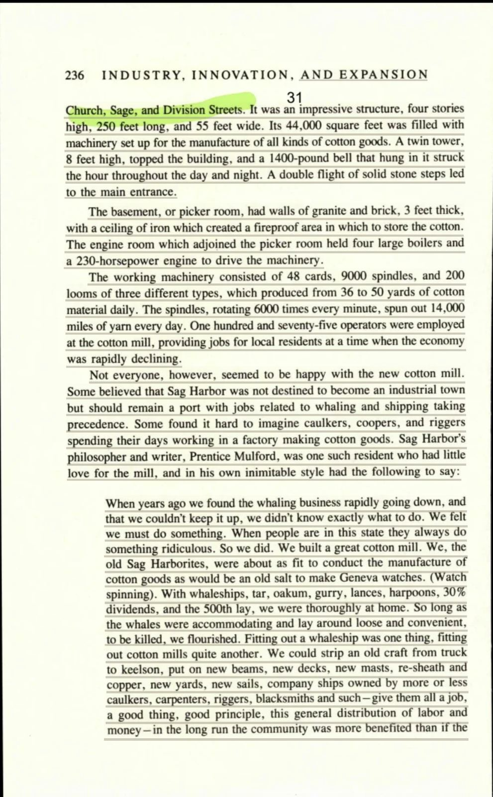
Quotes drawn from this page: 26 29
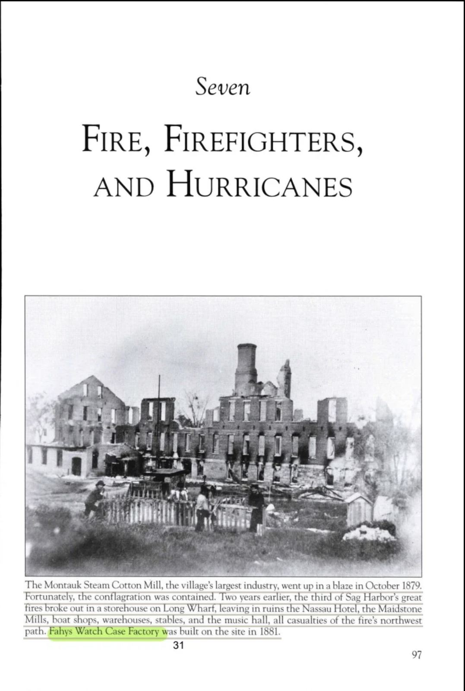
Quotes drawn from this page: 34 35 40 41 42 43 44 45 46 47 48 49 50 51 52 66 67 68 69 70 71 72 74 75 76 77 78 79 80
Of the quotes keyed to this page, only 78 — the peat fires lit to keep the newly poured concrete from freezing — is printed here. The other 28 belong to the same chapter, Industry, Innovation, and Expansion, and fall on the pages that lead up to this one. They are quoted accurately; the leaf that carries each is not yet on file.
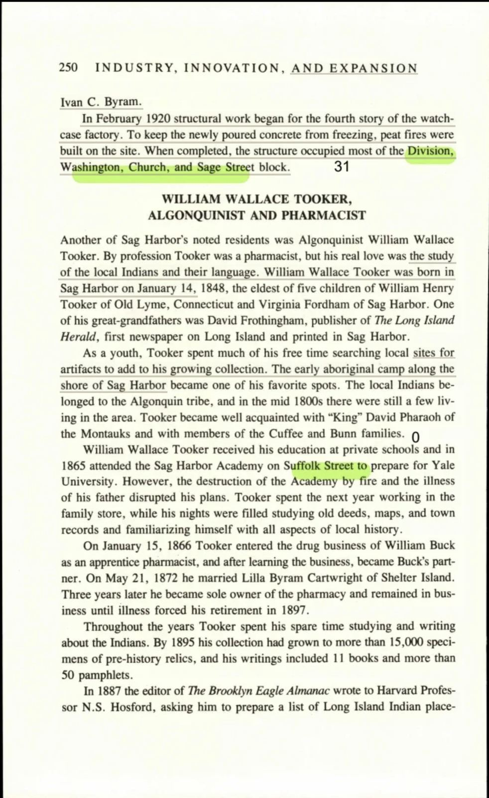
Quotes drawn from this page: 36 37 54 60 81 90
Quotes 36 and 37 are printed on this leaf, which opens the chapter. Quotes 54, 60, 81 and 90 continue the same unbroken account on the pages that follow, which are not on file.
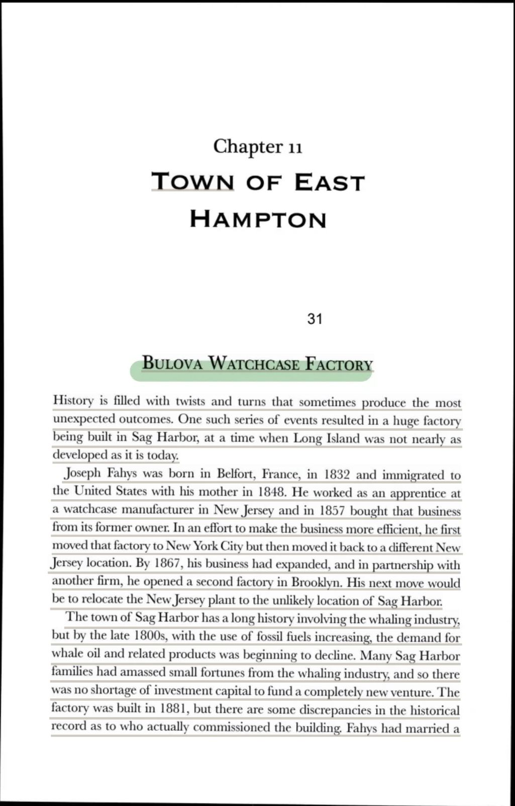
Quotes drawn from this page: 38 39 55 61 87 88 89 99 101 102
Quotes 38, 39, 55 and 61 are printed on this leaf. Quotes 87, 88, 89, 99, 101 and 102 carry the same chapter on to the pages after it, which are not on file.
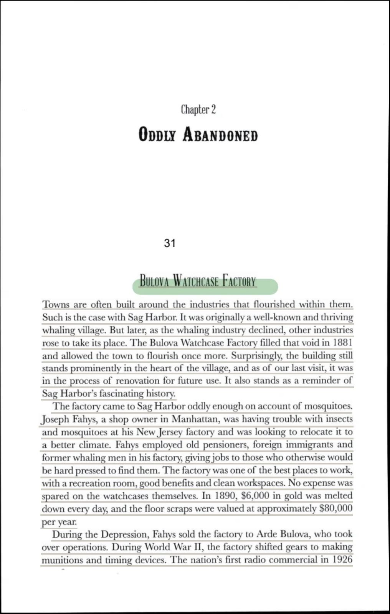
Quotes drawn from this page: 53
Quote 53 straddles the fold: this leaf opens with its second half, and Poland were brought to Sag Harbor to work. The words before it are the last line of the preceding page.
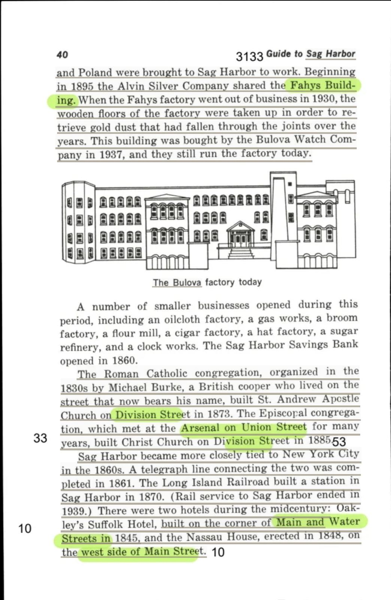
Quotes drawn from this page: 56 57 58 59
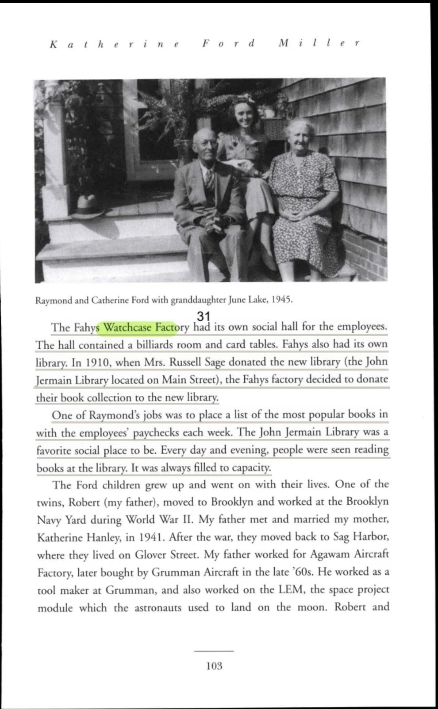
Quotes drawn from this page: 62 63 64 91 92 93 94 95
Quotes 62, 63, 64 and 91 to 94 are printed on this leaf, which breaks off mid-sentence at the foot. Quote 95, on the factory windows overlooking back yards, falls just past that break.
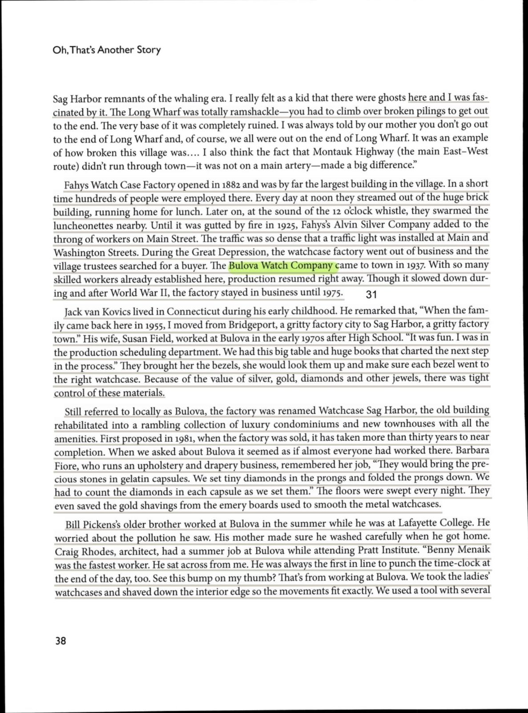
Quotes drawn from this page: 65
Quote 65 begins on this leaf and its final three words, in the 1850s, fall on the page after.
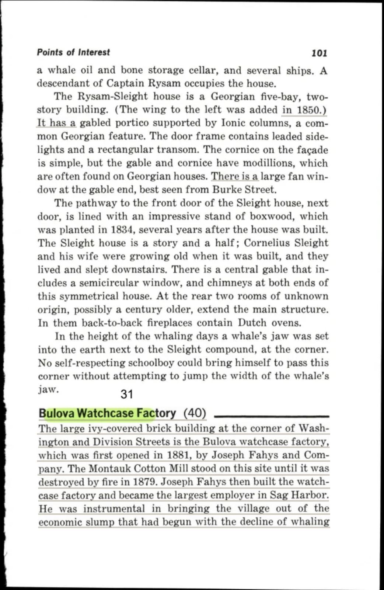
Quotes drawn from this page: 82
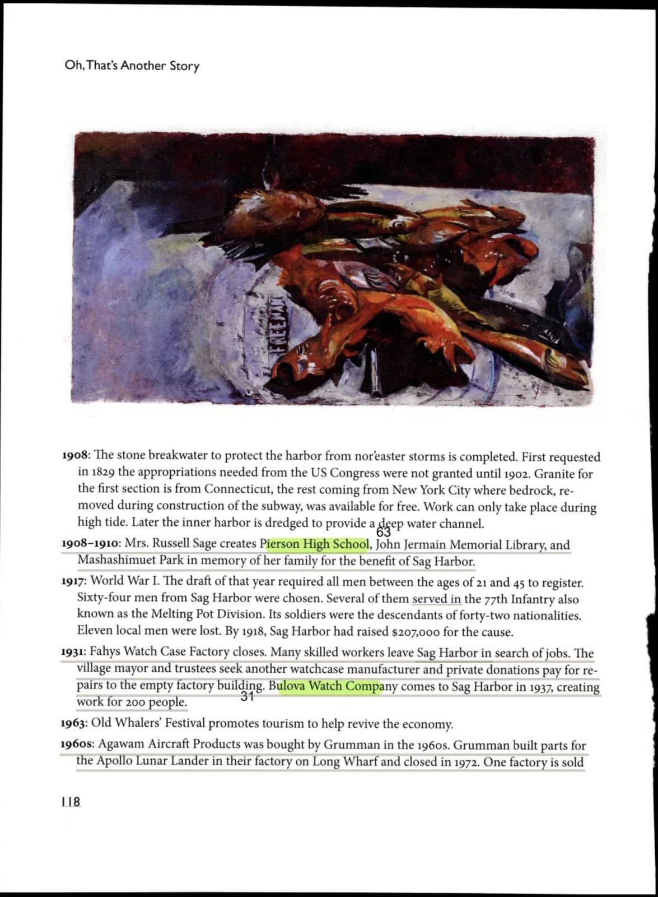
Quotes drawn from this page: 83 84 85 86
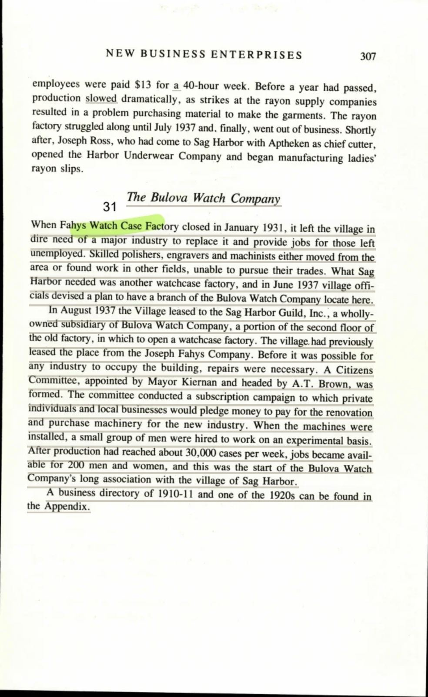
Quotes drawn from this page: 103 104 105 106 107
Quotes 104, 105 and 106 are printed on this leaf, word for word. Quote 103 (the wastewater residue) and quote 107 (the architects on a deteriorating, threatening hulk of a building) run on to the facing page, which is not on file; what this leaf carries of them is the same account in summary, beginning with the mitigation of a toxic waste site.
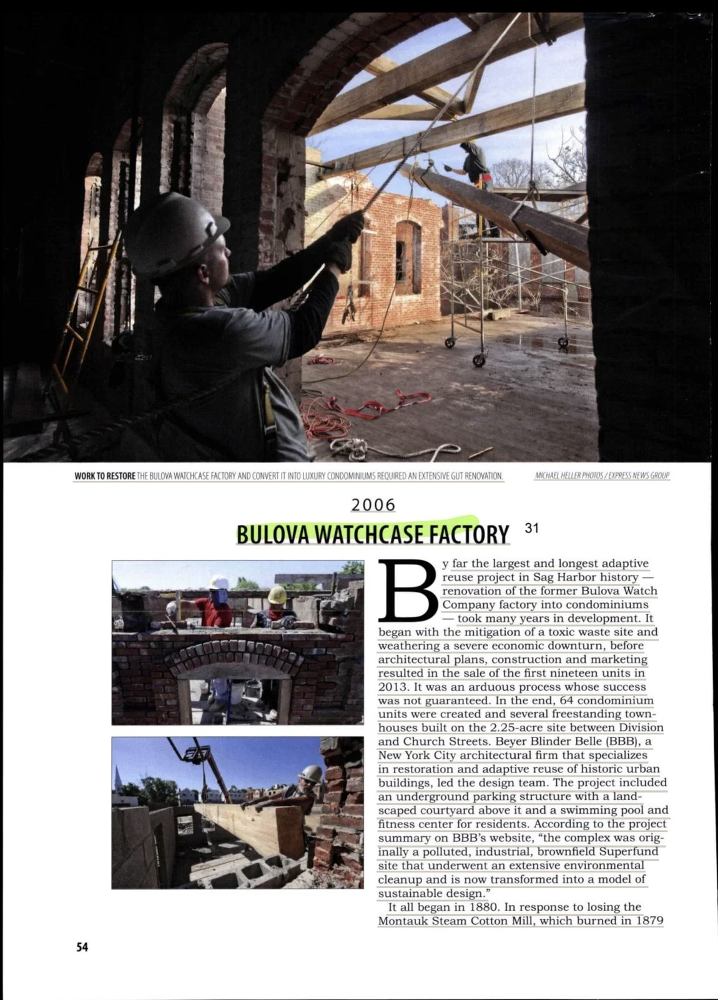